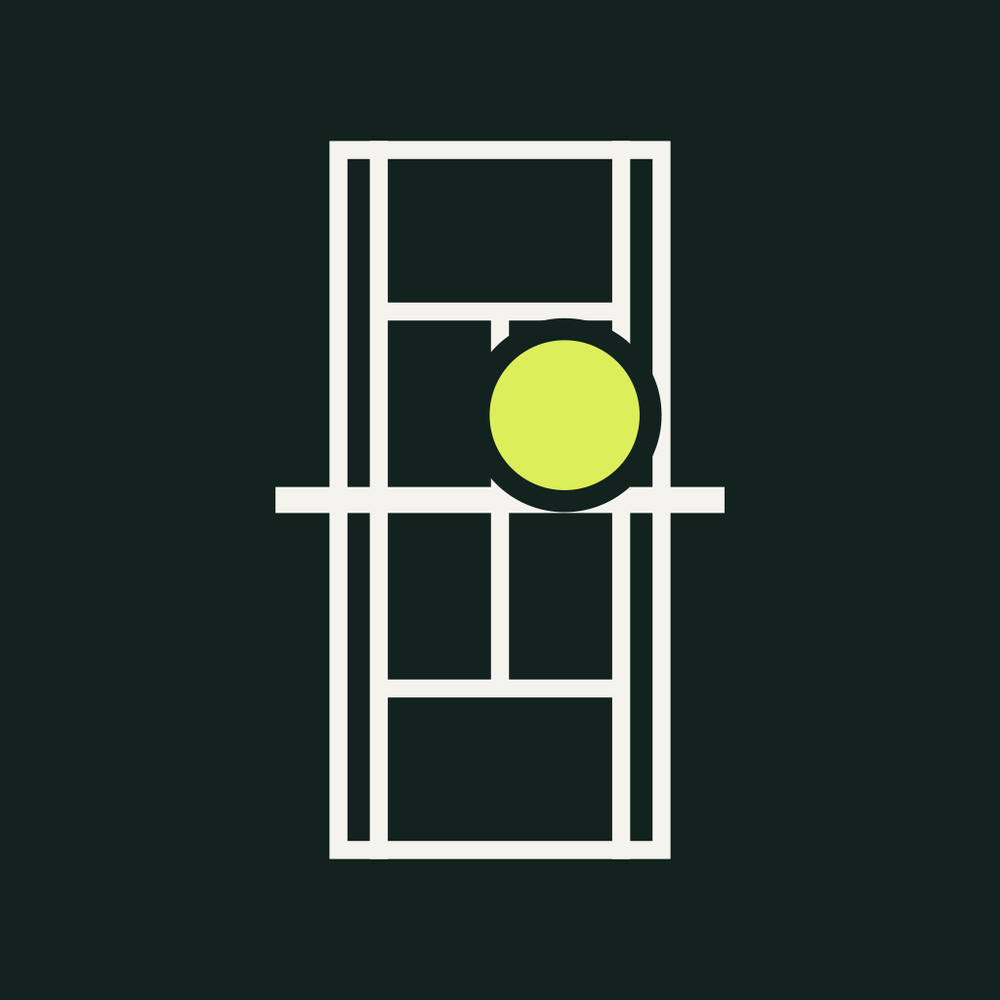

日本語 | English

審判がいなくても、全員の手元で同じスコア。コートの両側に置いた iPhone が近くで直接つながり、どの端末で点を入れても、全員の画面に同じスコアが出ます。テニス・パデル・バドミントン・卓球に対応しています。
相手の端末が見つかりません。
両方の端末で Wi-Fi と Bluetooth をオンにし（Wi-Fi のネットワークにつながっている必要はありません）、試合の画面を開いたままにしてください。初回は「ローカルネットワーク」へのアクセスを許可する必要があります。許可しなかった場合は、iPhone の「設定」→「プライバシーとセキュリティ」→「ローカルネットワーク」で Courtside をオンにしてください。
参加するのにチケットや Pro は必要ですか？
いいえ。人が作った試合に参加するのは、いつでも無料です。チケットや Pro が必要なのは、自分が作った試合でほかの端末とつなぐときだけです。
チケットを使ったのに、試合をやめてしまいました。
1点も入れずに試合を消した場合は、押し間違いとみなしてチケットを1枚戻します。
Pro の購入を復元したい／機種変更しました。
設定画面の「購入を復元」を押してください。購入時と同じ Apple ID でサインインしている必要があります。チケットは消耗型のため復元できず、残り枚数は端末ごとに保存されます。
Apple Watch に試合が出ません。
Watch のアプリは、iPhone の試合がほかの端末とつながっているとき（Pro またはチケットを使った試合、人の試合に参加したとき）に使えます。iPhone で試合を始めると、Watch に自動で表示されます。
データはどこに保存されますか？
試合の記録はお使いの端末内にのみ保存され、開発者のサーバーには送信されません。アプリを削除するとすべての記録が削除されます。
不具合のご連絡やご質問は、メールでお願いします。
gisazm2017@gmail.com
No umpire needed: everyone sees the same score. iPhones placed around the court connect directly, so a point added on any device shows the same score on every screen. Supports tennis, padel, badminton and table tennis.
The other device can't be found.
Turn on Wi-Fi and Bluetooth on both devices (you don't need to be connected to a Wi-Fi network) and keep the match screen open. The first time, allow access to the local network. If you declined, turn on Courtside in Settings > Privacy & Security > Local Network.
Do I need a ticket or Pro to join?
No. Joining someone else's match is always free. Tickets or Pro are only needed to connect other devices to matches you create.
I used a ticket but discarded the match.
If you delete a match before any point is recorded, the ticket is returned.
How do I restore Pro / I changed phones.
Tap "Restore Purchase" in Settings while signed in with the Apple ID you used to buy. Tickets are consumable and can't be restored; the remaining count is stored on each device.
The match doesn't appear on my Apple Watch.
The Watch app works when the match on your iPhone is connected to other devices (a match using Pro or a ticket, or one you joined). Start the match on your iPhone and it appears on the Watch automatically.
Where is my data stored?
Match records are stored only on your device and are never sent to the developer's servers. Deleting the app removes all records.
For bug reports or questions, please email us.
gisazm2017@gmail.com